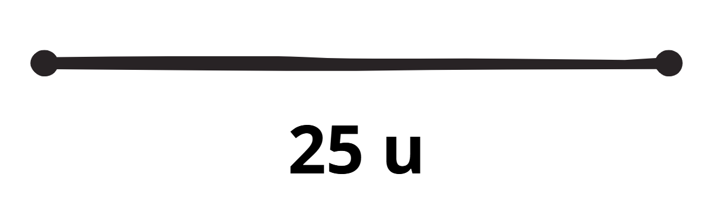
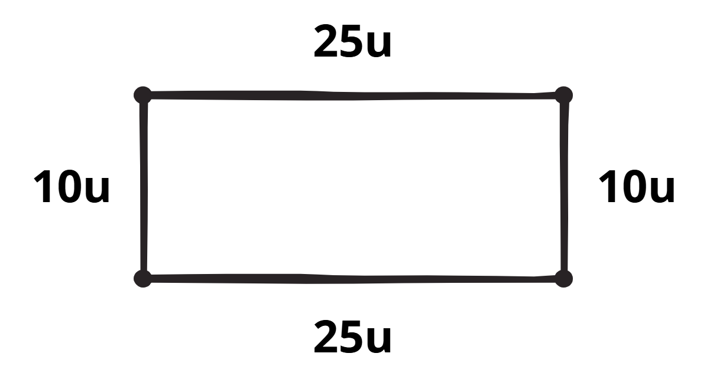

Sí, usualmente lo haríamos con una regla y eso se mide en centímetros(cm). Los centímetros es lo que llamamos una unidad de medida, que es como una etiqueta que nos dice cuánto espacio ocupa una figura.
Recuerda: las figuras geométricas ocupan un espacio, pero no son el espacio mismo.
Usualmente se coloca abajo del segmento y se pueden usar distintas unidades además del centímetro(cm), por ejemplo las unidades(u).
Si podemos medir un segmento, entonces podemos sumar las medidas de los segmentos que forman una figura. A esa suma se le conoce como perímetro y tiene usos muy importantes en el mundo real. Por ejemplo, si quieres cercar un jardín, tienes que saber el perímetro. Pero tranquilo, esto es más sencillo de lo que parece, pues solo debes sumar las medidas de todos los lados.
Veamos un ejemplo:
El perímetro de este cuadrilátero (todavía no pasemos a llamarlo rectángulo) es de 70u. Este valor lo encuentras al sumar los valores de cada lado.
El área es un concepto un poco más complejo. Primero, recordemos el ejemplo del jardín: Si para poner una cerca necesitaríamos conocer el perímetro, ¿qué necesitaríamos si quisieramos poner pasto? Necesitaríamos saber su área. Piensa en el área como el espacio que ocupa una figura. El área tiene medida que se mide en unidades cuadradas(por ejemplo, u² o cm²).
1. El perímetro de una figura se obtiene:
2. ¿Qué unidad se usa para medir el área?
3. Si un cuadrilátero tiene lados de 10u, 10u, 10u y 10u, su perímetro es:
4. El área de un cuadrilátero se calcula:
5. El área de un triángulo con base 8u y altura 6u es:
6. El perímetro de un rectángulo de 12u de largo y 5u de ancho es:
7. Si un triángulo tiene base 10u y altura 5u, su área es:
8. ¿Cuál de las siguientes opciones describe mejor la diferencia entre perímetro y área?
9. Si un cuadrilátero tiene base 15u y altura 4u, su área es:
10. El área de un triángulo con base 12u y altura 10u es:
11. Si un jardín tiene forma de cuadrilátero con lados 20u, 20u, 15u y 15u, su perímetro es:
12. Imagina que quieres cercar y luego cubrir con pasto un terreno rectangular de 18u de base y 7u de altura. ¿Cuánto miden el perímetro y el área respectivamente?